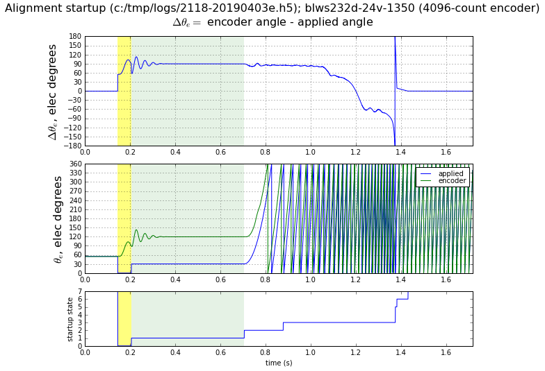
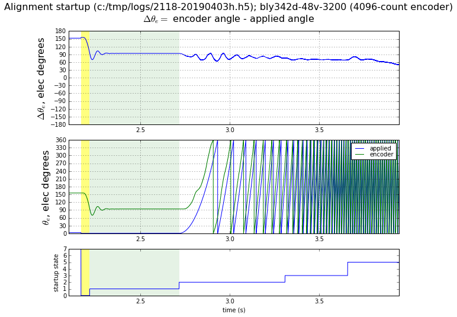
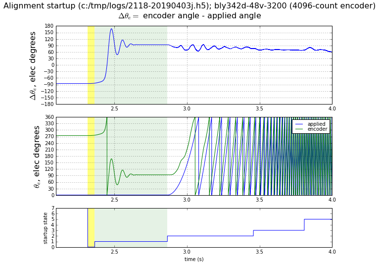
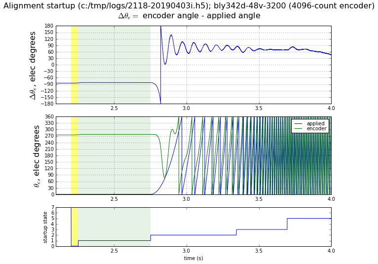
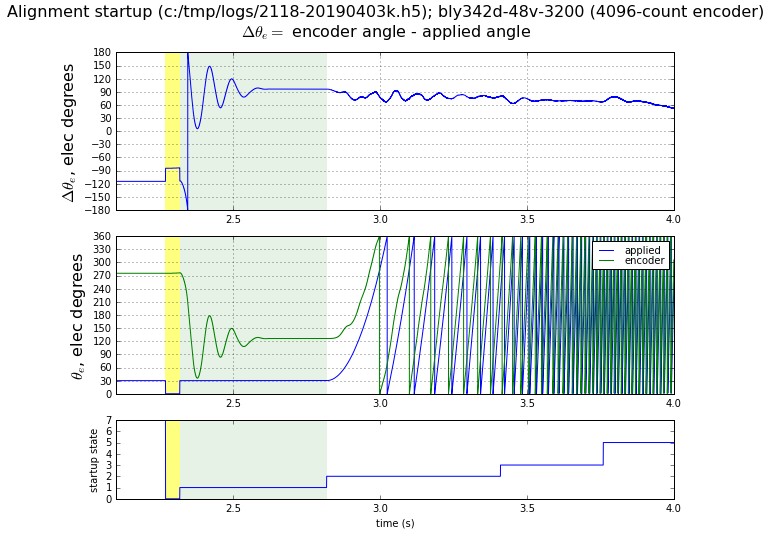
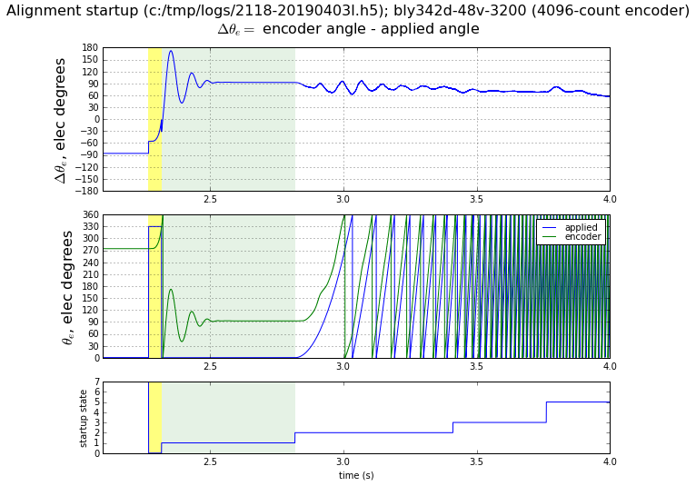

5.4.3.3.2. 对齐方法¶
5.4.3.3.2.1. 概述¶
在无负载转矩（齿槽、摩擦、扰动）的情况下，如果施加固定的 αβ 坐标系定子电流矢量，电机将沿 d 轴对齐，因为这到达了电磁转矩为零的平衡点。
反电动势同步的对齐方法利用此原理，提供了一种简单且通常可靠的方法来获取换相偏移，对于许多电机精度在几个电角度以内。
然而，此方法存在一些微妙之处，特别是在用于具有显著齿槽转矩的电机时。
如果使用对齐方法时存在负载转矩，电机将到达一个带有电气角度偏移 \(\tilde{\theta}\) 偏离 d 轴的平衡点，使得 \(T_{\mathrm{load}} + \frac{3}{2}K_eI\sin\tilde{\theta} = 0\)，换句话说， \(\tilde{\theta} = -\sin^{-1}\dfrac{T_{\mathrm{load}}}{\frac{3}{2}K_eI}\)。低成本电机的齿槽/凹槽转矩可能在连续额定转矩的 5%–10% 范围内，加上 1%–3% 的摩擦，因此如果使用等于连续额定电流的电流 I，我们应预期大约 \(\tilde{\theta} = \sin^{-1} 0.13 \approx 7.5^{\circ}\) 的最坏情况误差。超大型电机，即驱动器无法提供足以达到连续额定转矩的电流的电机，将有更大的误差。（例如：如果总负载转矩为 13% 连续额定转矩，驱动器可以提供 50% 连续额定转矩，则预期 arcsin(13/50) ≈ 15.1° 的最坏情况误差。）
启动 序列的“对齐”状态（电流矢量幅值和角度固定）被用于允许合适的稳定时间以达到机械平衡，在此时间结束时，计算施加的换相角度与编码器脈冲数之间的差值，用于获取换相偏移。
5.4.3.3.2.2. 局限性¶
连续转矩扰动可能阻止机械平衡
存在一个半稳定平衡点（局部稳定，全局不稳定）在 \(\tilde\theta = 180^\circ\) 附近，齿槽转矩将转子拉向特定的凹槽位置，电磁转矩足够小，除非施加不同的换相角度，否则无法将转子从凹槽中拉出。
5.4.3.3.2.3. 实际实现问题¶
启动序列中 rampup 和 align 状态使用的角度很重要，特别是角度偏移：可以在 rampup 和 align 状态期间施加不同的换相角度，以提高对齐方法克服转矩凵槽的能力，避免卡在半稳定平衡点。
关于角度偏移的更深入讨论见下文 示例数据部分。
MCAF 在对齐阶段沿 q 轴而非 d 轴施加电流，因此估计的换相偏移与对齐阶段结束时施加的换相电气角度与测量的编码器电气角度之间的角度差存在 \(\pm 90^\circ\) 偏移。此 \(\pm 90^\circ\) 偏移的符号取决于使用的 q 轴电流的符号。（当电机反方向启动时，启动过程中施加负 q 轴电流。）换句话说， \(\hat\theta_{\mathrm{ofs}} = (\theta_{\mathrm{enc}} - \theta_{e}) + 90^\circ \operatorname{sgn} I_q\) 其中角度下标 ofs， enc 和 e 分别指换相偏移、编码器角度（电气单位）和强制电气角度。
5.4.3.3.2.4. 示例数据¶
图 5.58 展示了对齐方法在 Anaheim Automation BLWS232D-24V-1350-1024SI5 上的使用，该电机具有 1024 线编码器和较低的齿槽转矩。对于此电机，对齐方法效果很好，误差低。黄色高亮部分显示电流上升状态（电流未显示），施加的电气角度为 \(\theta_0 = 0^\circ\)，绿色高亮部分显示对齐状态，施加的电气角度为 \(\theta_1 = 30^\circ\)。电机大约需要 0.15 秒达到平衡，因此 0.5 秒的对齐时间留有充分的时间达到 120° 的编码器角度，即领先施加的电气角度 90°。

图 5.58 对齐方法（BLWS232D-24V-1350-1024SI5， \(\theta_0 = 0^\circ, \theta_1 = 30^\circ\)¶
本节剩余的图展示了对齐方法在 Anaheim Automation BLY342D-48V-3200-1024SI5 上的使用。该电机具有显著的齿槽转矩，因此对齐方法的成功取决于初始条件和启动角度的选择。 图 5.59 展示了此电机启动时的情况，rampup 和 align 状态时施加的电气角度均为 0°： \(\theta_0 = \theta_1 = 0^\circ\)。在此情况下，电机的初始角度 \(\theta_{\mathrm{init}}\) 距平衡点约 65°，瞬变很快稳定下来。

图 5.59 对齐方法（BLY342D-48V-3200-1024SI5， \(\theta_0 = \theta_1 = 0^\circ, \theta_{\mathrm{init}}\approx 155^\circ\)¶
当转子的初始位置大约距平衡点 180° 时，转子可能会卡在半稳定平衡的凵槽中。 图 5.60 展示了这样一种情况，转子最终达到了正确的平衡，但瞬变过程长得多。

图 5.60 对齐方法（BLY342D-48V-3200-1024SI5， \(\theta_0 = \theta_1 = 0^\circ, \theta_{\mathrm{init}}\approx 275^\circ\)¶
图 5.61 展示了几乎相同的起始角度，但这次卡在了半稳定平衡中。注意，在以绿色高亮的对齐阶段，转子角度未有显著移动，仍约领先施加的电气角度 270°，而在成功的对齐方法中，它应达到领先施加的电气角度 90° 的平衡。在这种情况下，计算的换相偏移将偏差 180°，导致反方向转动而非正方向。

图 5.61 对齐方法（BLY342D-48V-3200-1024SI5， \(\theta_0 = \theta_1 = 0^\circ, \theta_{\mathrm{init}}\approx 275^\circ\)，这展示了转子卡在其初始条件附近的半稳定平衡中的情况。¶
使用角度偏移可以避免这种情况。
图 5.62 展示了类似的初始条件，但对齐阶段施加的角度偏移了 30°。这里 rampup 阶段仍卡在半稳定平衡中，但对齐阶段能够逃凵凵槽并达到预定位置。

图 5.62 对齐方法（BLY342D-48V-3200-1024SI5， \(\theta_0 = 0^\circ, \theta_1 = 30^\circ, \theta_{\mathrm{init}}\approx 275^\circ\)。¶
图 5.62 展示了类似的初始条件，对齐阶段施加的角度为 0°，但 rampup 阶段为 330°。在这种情况下，rampup 阶段提供了足够的转矩给电机一个冲击，避免卡在平衡中。

图 5.63 对齐方法（BLY342D-48V-3200-1024SI5， \(\theta_0 = 330^\circ, \theta_1 = 0^\circ, \theta_{\mathrm{init}}\approx 275^\circ\)。¶
这种添加角度偏移的技术并非万无一失，但似乎相当鲁棒。对几种高齿槽转矩电机的测试表明，30°–60° 范围内的角度偏移能够成功对齐。
5.4.3.3.2.5. 精度和可重复性测试¶
对齐方法在 MCAF R4 中进行了测试，并将从索引获得的换相偏移（motor.estimator.qei.position.commutationOffsetFromIndex）与参考方法进行了比较，参考方法是在电机以恒定速度机械转动时测量电机端子的开路电压。
表 5.2 描述了结果。在每种情况下，对齐方法进行了 64 次迭代，初始条件为跨越一个电气周期的均匀间距角度。除另有说明外，对齐方法的设置为默认值 \(\theta_0 = 330^\circ\) （rampup 状态）和 \(\theta_1 = 0^\circ\) （align 状态，角度偏移 30°）。每个电机使用 dsPICDEM® MCLV-2 开发板，默认电流限制为 2.29A，默认启动电流为电流限制的 91% = 2.08A。
均值 \(\tilde\theta_{\mathrm{ofs}}\) |
最大值 \(\tilde\theta_{\mathrm{ofs}}\) |
标准差 \(\hat\theta_{\mathrm{ofs}}\) |
极差 \(\hat\theta_{\mathrm{ofs}}\) |
测试用例 |
|---|---|---|---|---|
0.39° |
0.43° |
0.07° |
0.18° |
BLWS232D-24V-1350-1024SI5 |
1.00° |
1.50° |
0.28° |
0.97° |
BLY171D-24V-4000 配 4096 线编码器 |
15.44° |
189.35° |
54.47° |
352.62° |
BLY342D-24V-3000-1024SI5, 30° angle shift |
3.68° |
4.43° |
0.44° |
2.46° |
BLY342D-24V-3000-1024SI5, 60° angle shift |
3.44° |
3.91° |
0.42° |
1.41° |
BLY342D-48V-3200-1024SI5 |
误差指标如下：
均值 \(\tilde\theta_{\mathrm{ofs}}\) — 对齐方法与参考方法之间换相偏移差值的均值
最大值 \(\tilde\theta_{\mathrm{ofs}}\) — 对齐方法与参考方法之间换相偏移差值的最大值
标准差 \(\hat\theta_{\mathrm{ofs}}\) — 对齐方法估计的换相偏移的标准差
极差 \(\hat\theta_{\mathrm{ofs}}\) — 对齐方法估计的换相偏移的最小值与最大值之差
BLY342D-24V-3000-1024SI5 需要更大的角度偏移（60°）才能可靠工作。使用默认值 30° 时，接近 180° 平衡点的初始条件会导致电机卡在半稳定平衡中。这在 BLY342D-24V-3000 上比 BLY342D-48V-3200 更为严重；两个电机使用相同的叠片和转子，但绕组方式不同，BLY342D-24V-3000 具有更高的额定电流和更低的 \(K_e\)值，因此 2.08A 在对齐阶段无法产生同样大的转矩。